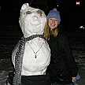

Directorate
The DCMB is directed by a group of elected students, with the help of our faculty advisor.
[As you can see below, I had problems with alignment. For h3, I have clear:left, so that the text is only next to its own picture. However, this also pushed it below the menu bar. I could just put a bunch of breaks after each paragraph, but I feel like there must be a better way I don't know about? Also, I had hoped the top of the pictures would align with the top of the paragraphs, but they don't and I don't know what I need to adjust.]
Coke Machine

The coke machine has headed the marching band since time immemorial. When conflicts arise, it has final, absolute, unquestionable say.
Faculty Advisor: Matthew Marsit
The faculty advisor helps the directorate coordinate with the school and the athletics department, accompanies us to games, and generally assists the student directorate.
Governor of Hawaii: The Honorable Linda Lingle

The role of the governor of Hawaii is not unlike that of the coke machine.
President: Grace Nauman

The President is responsible for coordinating the directorate, and any other people or groups that want to work with the band.
General Manager: Leah Nicolich-Henkin

The general manager is in charge of scheduling games, away trips, banquets, and visiting bands.
Leah was drawn to the band because she likes to hit things, espcially cymbals, and more recently drums.
Conductor/Drum Major: Katie Fitzgerald
The conductor/drum major runs band rehearsals, leads the band in parade and onto the field, and conducts the band on the field and in the stands.
Apprentice Conductor/Drum Major: Maggie Flanagan
The apprentice conductor/drum major assists the conductor/drum major and learns tricks of the trade.
Secretary: Casey Bradshaw
The secretary manages the band blitz (email) account, receiving and forwarding emails. The secretary also takes care of the social list, the attendence list, and PE credit.
Show Chairs:Kenny Baclawski and Tyler Spunaugle
Each week the show chairs head the band meeting to write the script for the next week and then put all our ideas together into a funny show.
At first glance, Kenny appears to be a normal person. Upon closer inspection, however, you will find that he cannot remember anything before three days ago and has a strange tattoo on his left shoulderblade that reads "Bubbles." For now, he reads marching band shows into a microphone at football games, until one day in three years, when he must travel to a small town in Nebraska to find the man who kidnapped his pet goldfish and started this whole mess... or so he believes...
Librarian: Rachel McConnell
The librarian is responsible for making sure that everyone in the band has the music they need, and for organizing our substantial music collection.
Equipment Manager: Chris Bodine
The equipment manager is responsible dealing with blazers, raincoats, lyres, instruments, and any other equipment the band needs.
Social/Publicity Chairs:Tyler Spunaugle and Maggie Flanagan
The social/publicity chairs run events for incoming freshman in the spring and fall, and run fun social events like a potluck and a scavenger hunt during the band season.
Webmaster: Leah Nicolich-Henkin
The webmaster made this website! And is responsible for keeping it up to date.
Leah was drawn to the band because she likes to hit things, espcially cymbals, and more recently drums.
Music Digitization Chair: Andrew Bloomgarden
The music digitization chair is a sort of combination assistant librarian/assistant webmaster. He's scanning our music to make the librarian's job easier.
Green Key Representative: Sede Makonnen

The Green Key Representative represents the band in Green Key Society.
Jock Chair: Jack Litherland

The jock chair organizes the band to play intramural ice hockey in the winter, or any other sports the band wants to play.
Alumni Relations Chair: Casey Bradshaw
The alumni relations chair is responsible for the band's interaction with its alums. This involves publishing an alumni newsletter, and organizing the alumni participation and lunch on Homecoming weekend.
Class Representatives:
Class representatives are the voice of each class in the directorate and are responsible for the continued enthusiasm of members of their class in participating in band and band functions.

This year (and for all years to follow) Phil has 12 toes, 12 fingers, and loves all 12 dozen 12s in the band. Phil would also like to remind you that there are 12 inches in a foot, 12 face cards in a deck, 12 ounces in a troy pound, and a 12 member board formed by Harry Truman that covered up an alien conspiracy.